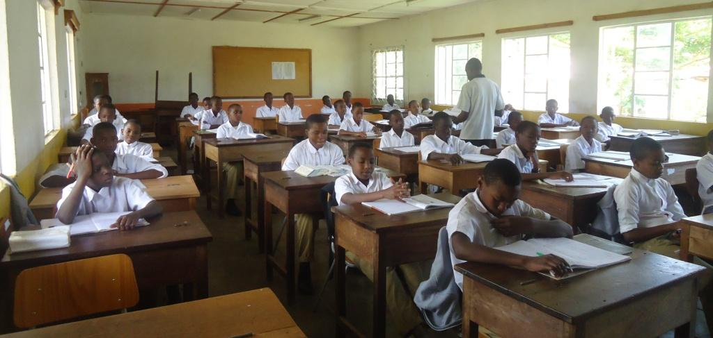
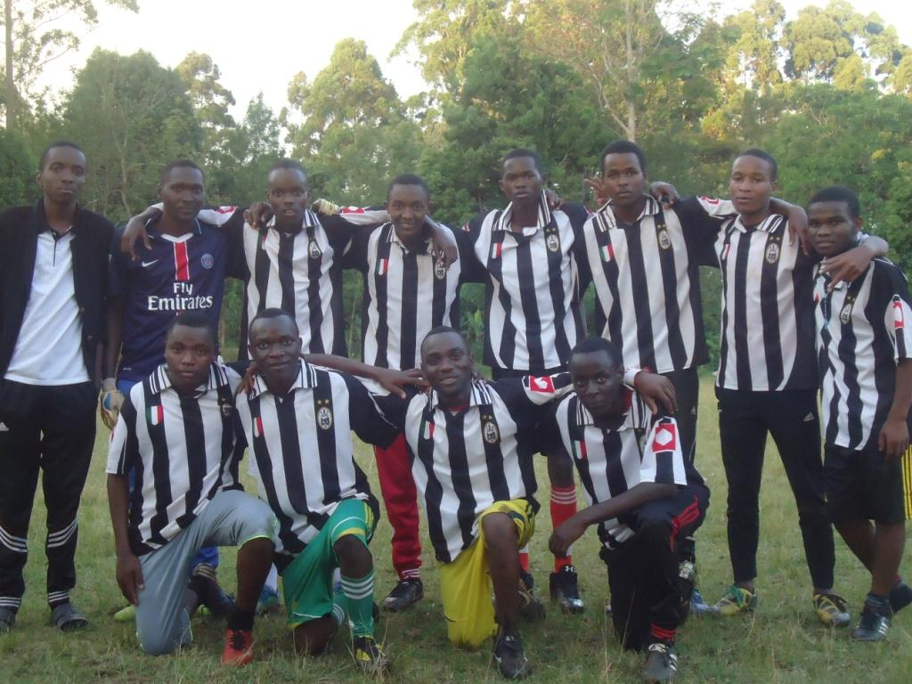
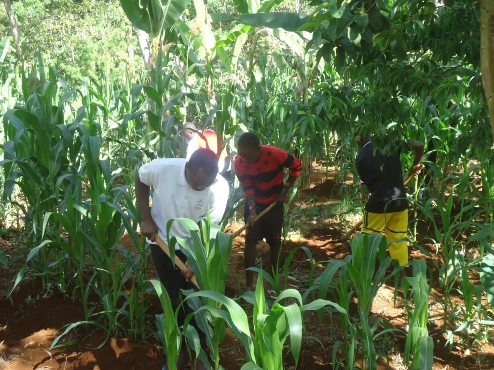

ADMINISTRATION OFFICE
.jpeg)
Maua seminary is a great school which provides
best and quality education to the students, it also
ensures their students have good morals to benefit
the great nation of Tanzania. You are all welcomed at Maua seminary at any time sine our environment is conducive.
ACADEMIC

Providing a high quality seconadry education to the students, with holistic formation aimed at forming Tanzanian boys
for pristely and religious vocation. For a civilized nation, people of higher academic excellence and good morals are the
the tools of peace and harmony of the nation. Also in this world of science and technology, we have equiped our school with
latest technology to align with the current needs of today.
SPORTS AND GAMES

Sports is healthy, sports is employment. Knowing this fact Maua seminry built a number of playing grounds like basketball grounds, football grounds with natural gresses, swimming pool and other indoors games to nurture students' talents.
This gives chance to those students with talents since learning does not ends in the classrooms
MANUAL WORK

From monday to Friday at 2:50pm students go for manual work until 3:50pm. The works they do at this time include; working at Ushirika farm,
gardening, livestock rearing, fluoriculture, preparing vegetables, milling, keeping the environment,carpentry and fishing.
The works are done
with an intention of giving students a manual work experience that will help them in their future life after school also to develop a self-reliance spirit
among students, just like our country (Tanzania) needs to prepare people who do work for self-reliance so as to eridacate poverty and the whole nation.